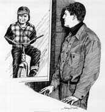

Urban Rancher Publishing


| Looking in My Mirror Backwards
 |
|
|---|---|
| As he comes to the end of his day of reflecting, of looking into the mirror of his life, he looked up at the stars and smiled, remembering the Little Prince and his flower, and felt some of the inner peace that he had been looking for beginning to take shape in his soul . . .
|
As I come to the end of this day of reflections, Of looking back at my life from its start, I look at that person I see in my mirror, And see that I've not always been smart. But I haven't done badly when I total the score, As I see the changes that are mine. It would have been better to become more aware Much earlier in life, but that's just fine. It's never too late to start looking for change, To improve on the person you were. Whether you're twenty or forty, or sixty and more, You're in charge of your life, that's for sure. We live in a country of opportunity unbounded, And we have the privilege of having the space To not just survive, but look into ourselves, And examine the issues we face. The world's getting crazier, the violence escalates, As it creeps into the fabric of our life. It's up to us to retain our perspective and balance, To find the inner peace among the daily strife. As I look in my mirror backwards, what will I see, And what will I do to change my ways? Now that I've looked backwards, it's forward I go, Charting a new course for my days. The road I've chosen won't always be smooth, And there will always be obstacles to find. I may stumble and fall, but I'll always get up, And go on with this incredible journey of the mind. And where are you in your journey, my friend? Are you waiting to start, or are you on your way? Look in your mirror backwards, it's not hard to do, And you'll start going forwards each day. Go ahead, take that big step onto the road of life -- You never know where it will take you. For to grow and to change, to heal and improve, The reflections from your mirror will ring true. |
Mountain Home Stained Glass
2148 McGraw Ranch Road
Estes Park CO 80517 USA
Orders: 970-586-2743
E-mail: urbanrch@frii.com
Copyright (c) 2008 Urban Rancher Publishing, Revised 20 October 2018